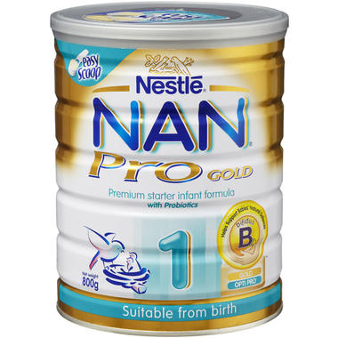
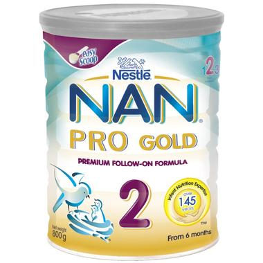

|  | 产品介绍：
澳洲Nestle NAN Pro gold 雀巢能恩金盾1段奶粉（0-6个月），2段奶粉（6-12个月）雀巢金盾TM保护系统由天然保护性营养素组成的完美组合，促进宝宝免疫，保护系统的发育：独有的BL益生菌，有益增强宝宝免疫保护功能的发育并抵御胃肠道疾病；专利蛋白技术提供的专佳蛋白TM，与BL益生菌协同发挥免疫保护作用；合理比例的DHA/ARA，不仅对大脑的发育具有重要作用，同时可调节宝宝的免疫功能。 DHA和ARA有益于宝宝大脑和视觉发育；优化钙铁锌等全面营养组合，为活力成长添动力 低磷酸盐，可以帮助钙质的吸收，促进骨质钙化 添加各种维生素和矿物质，提供婴儿生长发育所需的全面营养 添加母乳水平的核苷酸，提高宝宝的免疫力多种蔬菜富含膳食纤维，有效促进良好的消化和排泄固体废物 有效的避免，减少婴儿的过敏性 不添加防腐剂。富含铁质、钙质、维生素和卵磷脂及氨基酸 使用方法：
在准备配方前请洗手并保持干燥，清洗奶瓶，奶嘴等用具。 清洗完的哺乳用具放在沸水中煮5分钟用以消毒。在使用前请把奶瓶口封好。 准备煮沸5分钟的新鲜开水，等其逐渐冷却后，按照说明调配水和奶粉的比例。 逐个准备每个奶瓶，倒入冷却好的开水。 用罐中的勺子装好一勺奶粉，用餐刀刮平多余的部分。在30毫升的水中加入1勺奶粉（8.6克） 盖好奶瓶，摇匀，在喂前请滴一滴在手腕上以测试适宜的温度。喂完请把剩余的倒掉。 注意事项：
请储藏在干燥清爽之处。在背面注明的保质期前使用。打开后请在4周之内用完 如果按照说明的方法存储和准备喂食,婴儿将不需要额外的维生素和矿物质补充 |